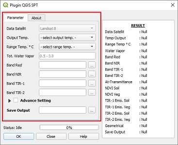
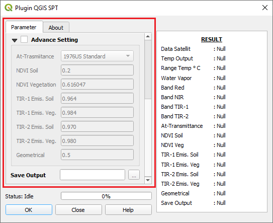
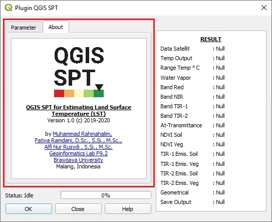
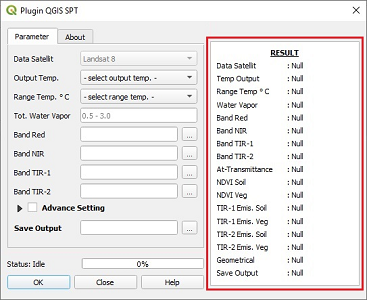

Plugin QGIS SPT¶
Concepts¶
Plugin QGIS SPT provides you for estimating land surface temperature (LST) using split-window algorithm (SWA) Qin for Landsat 8.
The steps to using Plugin QGIS SPT are fairly simple:
Open the plugin QGIS SPT from within QGIS.
Fill out the required value and input data band obtained from landsat 8 satellite imagery.
If you have the different value, you can change the default value from advance setting.
Calculate LST.
Running Plugin QGIS SPT¶
Tab Parameter¶
General Setting:
- Data Satellite
Data Satellite is data with values obtained from the metadata used for calculate LST , see Table Metadata Landsat 8.
- Output Temp.
Output temperature is to determine the external value of the resulting temperature , see Temperature Conversion.
- Range Temp.
Range temperature is the average value of air temperature in the area , see Table Regression Coefficients.
- Tot. Water Vapor
Total water vapor is the value of total water vapor content , see Total Water Vapor Content.
- Band Red
Band red is data from landsat 8 satellite imagery , see Table band Red, NIR, TIR-1, and TIR-2 Landsat 8.
- Band NIR
Band near-infrared (NIR) is data from landsat 8 satellite imagery , see Table band Red, NIR, TIR-1, and TIR-2 Landsat 8.
- Band TIR-1
Band thermal-infrared 1 (TIR-1) is data from landsat 8 satellite imagery , see Table band Red, NIR, TIR-1, and TIR-2 Landsat 8.
- Band TIR-2
Band thermal-infrared 2 (TIR-2) is data from landsat 8 satellite imagery , see Table band Red, NIR, TIR-1, and TIR-2 Landsat 8.
- Save Output
Save output is to determine the external directory of the data LST.
Advance Setting:
- At-Transmittance
This is the value of atmospheric transmittance , see Atmospheric Transmittance.
- NDVI Soil
This is the value of NDVI soil , see Table NDVI Soil and Vegetation.
- NDVI Vegetation
This is the value of NDVI vegetation , see Table NDVI Soil and Vegetation.
- TIR-1 Emis. Soil
This is the value of TIR-1 emissivity soil , see Table Emissivity Soil and Vegetation.
- TIR-1 Emis. Veg.
This is the value of TIR-1 emissivity vegetation , see Table Emissivity Soil and Vegetation.
- TIR-2 Emis. Soil
This is the value of TIR-2 emissivity soil , see Table Emissivity Soil and Vegetation.
- TIR-2 Emis. Veg.
This is the value of TIR-2 emissivity vegetation , see Table Emissivity Soil and Vegetation.
- Geomectical
This is the value of geomectical factor , see Table Geometrical Factor.
Tab About¶
This is a description of the plugin QGIS SPT (author, version plugin, etc.).
Result¶
This is a log generated from calculating LST.
Other¶

- Status:
This is a text to shows the activity of plugin QGIS SPT.
- Button Ok
This is the button to start the process of calculating LST , see Land Surface Temperature (LST) Split-Window Algorithm Qin.
- Button Close
This is the button to close the plugin QGIS SPT.
- Button Help
This is the button to display the help page.
Method Land Surface Temperature (LST)¶
Equation¶
Land Surface Temperature (LST) Split-Window Algorithm Qin : 1
Top Of Atmospheric Brightness Temperature : 3
Atmospheric Transmittance : 1
Spectral Radiance : 3
Land Surface Emissivity : 4
Surface Roughness : 4
Proportion of Vegetation : 4
Normalized Difference Vegetation Index (NDVI) : 4
Total Water Vapor Content : 4
Temperature Conversion : 6
Value¶
Table Emissivity Soil and Vegetation : 4
Bands |
\(\boldsymbol{\varepsilon_{s \lambda i}}\) |
\(\boldsymbol{\varepsilon_{v \lambda i}}\) |
|---|---|---|
Band TIR-1 |
0.964 |
0.984 |
Band TIR-2 |
0.970 |
0.980 |
Table Regression Coefficients : 1
T Range |
\(\boldsymbol{a_{10}}\) |
\(\boldsymbol{b_{10}}\) |
\(\boldsymbol{a_{11}}\) |
\(\boldsymbol{b_{11}}\) |
|---|---|---|---|---|
0 - 30 |
-59.1391 |
0.4213 |
-63.3921 |
0.4565 |
0 - 40 |
-60.9196 |
0.4276 |
-65.2240 |
0.4629 |
10 - 10 |
-62.8065 |
0.4338 |
-67.1728 |
0.4694 |
10 - 50 |
-64.6081 |
0.4399 |
-69.0215 |
0.4756 |
Table Ratio Water Vapor Content for range value Total Water Vapor Content 0.5–3 g/cm\(\boldsymbol{^2 }\) : 2
T Range |
\(\boldsymbol{R_{\omega}(0)}\) |
|---|---|
Tropical atmosphere |
0.6834 |
Sub-tropical summer |
0.6819 |
Sub-tropical winter |
0.6593 |
Mid-latitude summer |
0.6834 |
Mid-latitude winter |
0.6356 |
Table Geometrical Factor : 4
Description |
\(\boldsymbol{F^{\prime}}\) Default Value |
|---|---|
Geometrical Factor |
0.5 |
Table NDVI Soil and Vegetation : 4
Description |
\(\boldsymbol{NDVI_{s}}\) and \(\boldsymbol{NDVI_{v}}\) Default Value |
|---|---|
NDVI Soil |
0.2 |
NDVI Vegetation |
0.5 (may be to low in some cases) |
Table Saturation Mix Ratio and Air Density : 2
\(\boldsymbol{T}\) Range( \(\boldsymbol{^{\circ} \mathrm{C}}\) ) |
\(\boldsymbol{E}\) (g/kg \(\boldsymbol{^{-1}}\) ) |
\(\boldsymbol{a}\) (kg/m \(\boldsymbol{^{-3}}\) ) |
|---|---|---|
45 |
66.33 |
1.11 |
40 |
49.81 |
1.13 |
35 |
37.25 |
1.15 |
30 |
27.69 |
1.17 |
25 |
20.44 |
1.18 |
20 |
14.95 |
1.21 |
15 |
10.83 |
1.23 |
10 |
7.76 |
1.25 |
5 |
5.50 |
1.27 |
0 |
3.84 |
1.29 |
-5 |
2.52 |
1.32 |
-10 |
1.63 |
1.34 |
Table band Red, NIR, TIR-1, and TIR-2 Landsat 8 : 5
Bands |
Bands Landsat 8 |
|---|---|
Band Red |
Band 4 |
Band NIR |
Band 5 |
Band TIR-1 |
Band 10 |
Band TIR-2 |
Band 11 |
Table Metadata Landsat 8 :
Metadata |
Value Landsat 8 |
|---|---|
\(\boldsymbol{\boldsymbol{K}_{1}}\) (TIR-1) |
774.8853 |
\(\boldsymbol{\boldsymbol{K}_{1}}\) (TIR-2) |
480.8883 |
\(\boldsymbol{\boldsymbol{K}_{2}}\) (TIR-1) |
1321.0789 |
\(\boldsymbol{\boldsymbol{K}_{2}}\) (TIR-2) |
1201.1442 |
\(\boldsymbol{\boldsymbol{M}_{L}}\) (TIR-1 and TIR-2) |
0.0003342 |
\(\boldsymbol{\boldsymbol{A}_{L}}\) (TIR-1 and TIR-2) |
0.1 |
References¶
- 1(1,2,3)
Qin, et al. (2014) ‘Derivation of land surface temperature for landsat-8 TIRS using a split window algorithm’, Sensors (Switzerland), 14(4), pp. 5768–5780. doi: 10.3390/s140405768.
- 2(1,2)
Qin, et al. (2015) ‘An improved mono-window algorithm for land surface temperature retrieval from landsat 8 thermal infrared sensor data’, Remote Sensing, 7(4), pp. 4268–4289. doi: 10.3390/rs70404268.
- 3(1,2)
USGS. (2019) ‘Landsat 8 (L8) Data Users Handbook’.
- 4(1,2,3,4,5,6,7,8)
Tsou, J. et al. (2017) ‘Urban Heat Island Assessment Using the Landsat 8 Data: A Case Study in Shenzhen and Hong Kong’, Urban Science, 1(1), p. 10. doi: 10.3390/urbansci1010010.
- 5
https://landsat.gsfc.nasa.gov/wp-content/uploads/2013/01/BandpassesL7vL8_Jul20131.pdf
- 6
https://en.wikipedia.org/wiki/Conversion_of_units_of_temperature